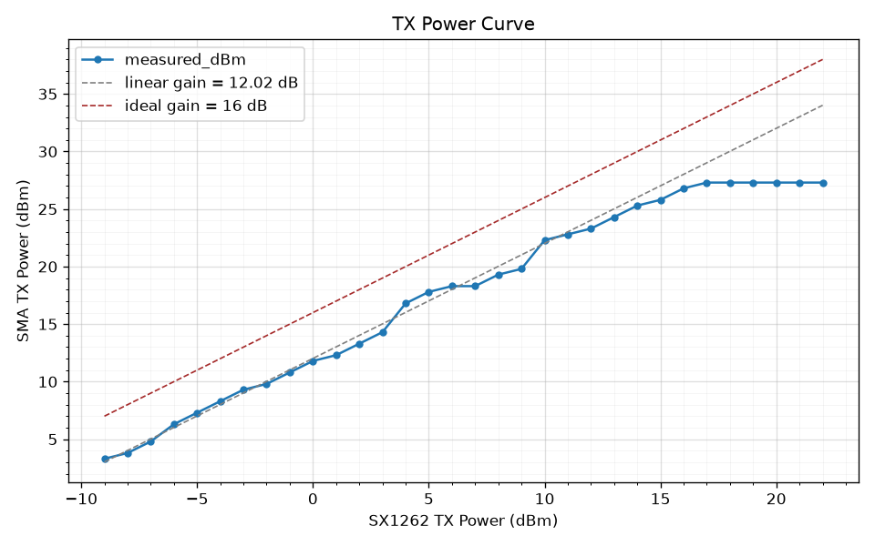

RF Experiments¶
The preceding analysis relies on datasheet parameters and free-space models. The measurements below verify these predictions on real hardware in the actual deployment environment. Specifically, we want to:
- Confirm the TX chain — measure conducted power across TX settings to find the actual P1dB compression point and verify what
radio.txpowerreaches \(P_{sat}\). - Characterize the RX noise floor — measure the system noise floor with a 50-ohm terminator (system noise only), with an antenna (system + environmental), and with a bandpass filter (in-band only). Comparing the three reveals how much OOB energy the local environment contributes and whether the LNA raises or lowers the effective noise floor in practice.
- Decide the LNA configuration — if the antenna noise floor with LNA on is significantly higher than with LNA off, OOB interference dominates and the LNA should remain bypassed. If the two are comparable, the environment is quiet enough to benefit from the LNA's sensitivity improvement of about 6 dB over bypass.
Equipment¶
The bench measurements use the equipment listed in the table below, a 50-ohm SMA terminator (any standard terminator — RX-only measurement, no significant power dissipation) and SMA cables and adapters as needed.
| Asset | Property | Value | Notes |
|---|---|---|---|
| NanoVNA-F v2 | Max Output Power | -5 dBm | |
| Max Input Power | 0 dBm | ||
| Bandwidth | 50kHz-3GHz | ||
| TinySA Ultra+ ZS-406 | Max Input Power | 6 dBm | |
| Bandwidth | 100kHz-5.4GHz | ||
| Wide Band Attenuator | Attenuation | 50 dB +/-2.5 dB | |
| Max Power CW dB | 50 W CW | ||
| Impedance | 50 ohm | ||
| Bandwidth | DC - 3 GHz | ||
| VWSR | 1.2 | ||
| ISM Band Filter | Attenuation | 22 dB / 1.6 dB | |
| Max Power CW | 1 W | ||
| Bandwidth | 902MHz-928MHz |
Safety rule — never connect PA output directly to any instrument port. PA output may reach 30 dBm (1 W) damaging equipment. After the 50 dB attenuator: 30 - 50 = -20 dBm at the instrument input. The attenuator is mandatory in every measurement path downstream of the PA.
TX Radiated Power¶
In this experiment we measure the actual power radiated at the antenna port across SX1262 TX power settings, with two main objectives:
- Find the optimal radio.txpower value that achieves the board maximum power at the inception of the PA saturation.
- Quantify the transmission chain board and connection loss \(L_{tx}\)
In this experiment we first connect the antenna SMA port to the input port of the spectrum analyzer through an attenuator, to reduce the power so as not to damage the instrument.
Then we use the CLI to set different values of radio.txpower and measure the power at the SMA port across the TX chain, including gains and losses.
For this, beebo provides an automated procedure with the measure txpower command:
$ beebo measure txpower -h
Usage: beebo measure txpower [OPTIONS]
Sweep TX power and read peaks on a spectrum analyzer (advert or CW).
╭─ Options ────────────────────────────────────────────────────────────────────────────────────────────────────────────╮
│ --carrier -c [advert|cw] Carrier type: advert bursts (max-hold) or a steady CW tone. │
│ --optimize --no-optimize CW only: paOptTable (optimize) vs fixed PA / monotone low end. │
│ [default: optimize] │
│ --help -h Show this message and exit. │
╰──────────────────────────────────────────────────────────────────────────────────────────────────────────────────────╯
The command sweeps SX1262 TX power from -9 to 22 dBm, sends an advert at each step, and prompts for the TinySA reading. It computes gain and compression at each point, identifies the P1dB compression point, and outputs results as a markdown table and CSV file. The 1dB compression point P1dB here is the output power level where the PA actual gain drops by 1 dB compared to its ideal, linear gain.
Measuring the power of an advert is possible but tricky, and requires setting the analyzer to carefully persist the generated short burst signals for reading. To simplify the reading, option --carrier cw can be used to have the radio generate a steady continuous wave tone that is straightforward to read from the analyzer.
The --optimize option controls an underlying PA optimization process that makes the PA's behavior non-monotonic, where one would expect the output to rise steadily.
We can optionally disable the optimization to have a more monotonic behavior using --no-optimize.
The command reminds the user of the experiment requirements and sequence of steps.
$ beebo measure txpower
TX Power Measurement Procedure:
1. Power off board and tinySA Ultra+
2. Connect antenna output to tinySA RF input through 50 dB attenuator
3. Turn on and configure tinySA Ultra+ (see README)
4. Turn on board
5. Run this test (beebo measure txpower)
6. At each power level, read the peak on tinySA and enter the value
Press Enter to start the test...
Once the procedure is complete a CSV file with the measurements is produced (expand the table to see the details).
Table TX Power Measurements:
| txpower (dBm) | measured (dBm) | gain (dB) | compression (dB) | | ------------: | -------------: | --------: | ---------------: | | -9 | 3.3 | 12.3 | -0.3 | | -8 | 3.8 | 11.8 | 0.2 | | -7 | 4.8 | 11.8 | 0.2 | | -6 | 6.3 | 12.3 | -0.3 | | -5 | 7.3 | 12.3 | -0.5 | | -4 | 8.3 | 12.3 | -0.3 | | -3 | 9.3 | 12.3 | -0.3 | | -2 | 9.8 | 11.8 | 0.2 | | -1 | 10.8 | 11.8 | -0.2 | | 0 | 11.8 | 11.8 | 0.2 | | 1 | 12.3 | 11.3 | 0.7 | | 2 | 13.3 | 11.3 | 0.7 | | 3 | 14.3 | 11.3 | 0.7 | | 4 | 16.8 | 12.8 | -0.8 | | 5 | 17.8 | 12.8 | -0.8 | | 6 | 18.3 | 12.3 | -0.3 | | 7 | 18.3 | 11.3 | 0.7 | | 8 | 19.3 | 11.3 | 0.7 | | 9 | 19.8 | 11.8 | 0.2 | | 10 | 22.3 | 12.3 | -0.3 | | 11 | 22.8 | 11.8 | 0.2 | | 12 | 23.3 | 11.3 | 0.7 | | 13 | 24.3 | 11.3 | 0.7 | | 14 | 25.3 | 11.3 | 0.7 | | 15 | 25.8 | 10.3 | 1.7 | | 16 | 26.3 | 10.3 | 1.7 | | 17 | 27.3 | 10.3 | 1.7 | | 18 | 27.3 | 9.3 | 2.7 | | 19 | 27.3 | 8.3 | 3.7 | | 20 | 27.3 | 7.3 | 4.7 | | 21 | 27.3 | 6.3 | 5.7 | | 22 | 27.3 | 5.3 | 6.7 |In the table, txpower_dBm is the SX1262 radio.txpower setting, measured_dBm is the measured TX output at the SMA, gain is the difference between the two, and compression is the difference between the computed gain and the expected ideal gain.
The data is further analyzed by a plotting script that generates the chart below. Here ideal gain is the gain of the TX chain previously computed without losses. The actual linear gain after losses is computed regressing the first half of the gain column to exclude the saturation region, and nicely superimpose itself on the curve.
We can now estimate the transmission chain loss with the difference between ideal and real linear gains:

The P1dB compression point is roughly at txpower = 16 dBm with the SMA TX power plateauing at 27.3 dBm from txpower 17 dBm, which corresponds to our optimal settings.
The resolution of the measurement is ±0.5 dB and the estimated accuracy ±1 dB.
Beebo therefore ships radio.txpower 18.
System Noise Floor¶
We would like to evaluate the system noise floor across different gain and antenna configurations, verify our analytically computed estimations and determine whether the use of a bandpass filter would help.
For noise floor measurements we rely on the noise_floor function computed by the MeshCore FW, reported with resolution of ±1dB and estimated accuracy of ±2dB.
However, this is not a direct measurement of \(N_{floor}\), rather it is an estimate derived from 64 averaged SX1262 RSSI readings, sampled every 2 seconds, where spikes and regular packets are filtered out and result clamped to a minimum of -120 dBm.
The RSSI readings from the SX1262 are made through the GetRssiInst command which returns the instantaneous RSSI value seen after filter and gain before demodulation.
Internally, the SX1262 refers the RSSI values back to its input, factoring out gain stages and AGC. Therefore noise_floor is an estimate of the noise floor seen at the input of the SX1262, not after demodulation.
To measure system noise floor we isolate the receiver chain from environmental RF by using a 50-ohm terminator stub instead of an antenna. This measures thermal + receiver noise only. Measurements are performed through the measure noise internal command.
The command reminds us of the procedure requirements and steps:
$ beebo measure noise internal
Internal Noise Floor Measurement Procedure:
1. With the antenna still connected, set TX power to -9 to protect the termination stub: beebo settings companion.radio.txpower -9
2. Power off board
3. Replace antenna with 50 ohm termination stub
4. Power on board
5. Run the test: beebo measure noise internal
6. Power off board
7. Replace stub with antenna
8. Set companion.radio.txpower to original value
The test itself runs at -9 dBm on the preset you choose and restores
every setting after; step 1 covers the adverts sent before it starts.
combined and in_band use this run as the reference for the LNA gain.
LoRa preset [USA/Canada]:
Press Enter to start the test...
The test asks for a LoRa preset (Enter keeps the one the node is on), so the RX chain is measured at the bandwidth and spreading factor it normally runs at. For the run it holds settings in RAM, applies the preset, txpower -9 and FEM RSSI offsets 0/0 (raw SX1262-input readings), then restores everything from flash. --antenna-ref keeps the node's offsets instead (see RSSI at the Antenna Connector).
The test cycles 3 times through all permutations of radio.rxgain and fem.rxgain, waiting 5 s for the floor to settle and taking 10 noise_floor samples on each visit. Each config reports the median of its 30 samples after dropping those more than 3 MADs (at least 1 dB) from it, with the min and max for the spread. The medians are also saved as JSON next to the report, for combined and in_band to use. The tables below were taken with an earlier version that reported min/max of 5 samples:
Table 14: Measured Noise Floor by Configuration
| fem.rxgain | rxgain | min (dBm) | max (dBm) |
|---|---|---|---|
| off | on | -113 | -113 |
| off | off | -113 | -113 |
| on | on | -94 | -94 |
| on | off | -94 | -94 |
Because we are using a stub as antenna we expect to see little or no variation in the readings. If readings show min and max value far apart, position the board away from interferers like laptops, WiFi routers or other transmitting devices.
From the table we should be able to verify that changes in rxgain do not produce different values, since the gain in the SX1262 is factored out.
Since we have no visibility in the SX1262 RX chain we can just consider the noise floor value where rxgain = on, its boosted default mode.
Comparing the \(N_{stub}\) values in the table with the \(N_{floor}\) values we have calculated in Table 8.
But before we can do that, to compare apples to apples, we first need to translate \(N_{floor}\) to the SX1262 input plane \(N_{sx}\), since \(N_{floor}\) is input-referred to the antenna port and not the SX1262 input.
The noise at SX1262 input is:
When the LNA is used (fem.rxgain = on):
- \(G_{fem} = G_{LNA} = 15\) dB
- \({NF}_{fem} = {NF}_{LNA} = 1.9\) dB
- \(N_{LNA} = N_{thermal} + {NF}_{LNA} + G_{LNA}\)
when the LNA is bypassed (fem.rxgain = off):
- \(G_{fem} = - L_{bypass} = -2\) dB
- \({NF}_{fem} = L_{bypass} = 2\) dB.
- \(N_{bypass} = N_{thermal} + L_{bypass} - L_{bypass} = N_{thermal}\)
Note how for the bypass gain and noise cancel each other out since a passive matched attenuator only contributes spectral noise (at \(T_0\)).
Looking closely, though, there is an opportunity for us to compute the LNA gain \(G_{LNA}\) straight from the noise floor measurement. In fact, the difference between \(N_{LNA}\) and \(N_{bypass}\) is:
Solving for \(G_{LNA}\):
From the measurement table \(ΔN = -94 + 113 = 19\) dB, therefore:
That is 2 dB more than the approximate published 15 dB number.
We can now compute \(N_{sx}\) for the two cases:
- \(N_{bypass} = N_{thermal} = -126\) dBm
- \(N_{LNA} = N_{thermal} + {NF}_{LNA} + G_{LNA} = -126 + 1.9 + 17 ≈ -107\) dBm
And compare with measured \(N_{stub}\) values:
| fem.rxgain | \(N_{sx}\) | \(N_{stub}\) | \(N_δ\) |
|---|---|---|---|
| off | -126 dBm | -113 dBm | +13 dB |
| on | -107 dBm | -94 dBm | +13 dB |
Note how the offset between predicted and measured is +13 dB in both configurations. It is a fixed offset inside the SX1262 that does not change in gain, not a modeling error that varies with gain. If the reference planes were wrong, the two offsets would differ.
The delta offset could be attributed to SX1262 sampling the instantaneous RSSI before the channel filter therefore raising thermal noise by several dBs. To test this theory we sweep noise floor with different values of BW:
| bw (kHz) | min (dBm) | max (dBm) | Δ meas (dB) | Δ thermal (dB) |
|---|---|---|---|---|
| 62.5 | -94 | -94 | +0 | +0.0 |
| 125.0 | -91 | -91 | +3 | +3.0 |
| 250.0 | -89 | -88 | +5 | +6.0 |
The measured noise floor nicely tracks the thermal noise, therefore the SX1262 samples RSSI after the band filter.
One consideration is that although GetRssiInst refers the RSSI back to the input plane removing gain, it does not remove the noise power injected up to the sampling point across filter, LNA, AGC, etc. Therefore a component of 13dB offset could be attributed to the SX1262 \({NF}_{radio}\) noise figure adding 6.5 dB. In that case the offset shrinks to 6.5 dB.
| fem.rxgain | \(N_{sx}\) | \(N_{stub}\) | \(N_δ\) |
|---|---|---|---|
| off | -119.5 dBm | -113 dBm | +6.5 dB |
| on | -100.5 dBm | -94 dBm | +6.5 dB |
The remaining 6.5 dB difference could be attributed to electromagnetic interference (EMI) on the board by SPI, MCU, WiFi, or Digital Filtering & Equivalent Noise Bandwidth (ENBW) from the channel digital filter or who knows what else.
RSSI at the Antenna Connector¶
The SX1262 reports RSSI at its own input, after the FEM, so every reading includes the FEM path gain: about +17 dB through the LNA and about −2 dB through the bypass. The same signal therefore reads about 19 dB apart depending on fem.rxgain. The firmware adds a per-path offset to every RSSI read, so packet RSSI and the noise floor refer to the antenna connector instead:
| Setting | Default | Applies when |
|---|---|---|
board.fem.rssi_offset.lna |
−17 dB | LNA on (fem.rxgain on), and always on the GC1109 (V4.2), which has no bypass |
board.fem.rssi_offset.bypass |
+2 dB | LNA bypassed (fem.rxgain off) |
The offsets are board-level settings, persisted and shared by both roles, from −30 to 30 dB; 0/0 gives raw SX1262 values. Switching the LNA, or changing the offset of the path in use, restarts the noise floor. The offsets are compiled in with BEEBO_RSSI_ANT_REF, which every multi-role build sets.
On bench, measure noise internal (raw, USA/Canada) reads −113 dBm in bypass and −94 dBm with the LNA (Table 14), a 19 dB step, the same as the 19 dB the nominal offsets correct. We keep −17/+2. The stub step is a ratio of noise powers, which also depends on each path's noise figure, so it confirms the offsets only to about a dB; a CW measurement at a known level would pin each path separately.
With the offsets applied, the two paths read the same floor: −113 + 2 = −111 dBm in bypass, −94 − 17 = −111 dBm with the LNA. measure noise internal --antenna-ref measures this directly.
Environmental Noise (with antenna)¶
Same procedure as above but with the antenna connected (measure noise combined).
Compare results with the terminated measurements to see how much of the noise floor comes from the RF environment vs the receiver chain. A large difference suggests a bandpass filter before the LNA would help.
$ beebo measure noise combined
Combined Noise Floor Measurement Procedure:
1. Connect the real antenna (not 50 ohm stub)
2. Power on board
3. Run this test
4. Repeat test if needed
Noise floor is sampled during idle gaps between packets
(firmware filters out active reception automatically).
Compare with noise internal to see environmental noise contribution.
LoRa preset [USA/Canada]:
Press Enter to start the test...
| fem.rxgain | \(N_{env}\) | \(N_{stub}\) |
|---|---|---|
| off | -110 dBm | -113 dBm |
| on | -90 dBm | -94 dBm |
The environment, in our case an urban area not in proximity of cellular towers, adds around 3-4 dB of noise with respect to the 50Ω stub antenna, seemingly for both LNA on/off cases.
combined and in_band also print the LNA path gain over bypass, from the latest internal run on the same node and preset. Per path, the stub reading is subtracted from the antenna reading in mW, which cancels the noise added after the SMA (SX1262 noise figure, board EMI). The gain is the LNA path's result minus the bypass path's, in dB, shown for each rxgain. A path less than 3 dB above the stub gives no gain: the subtraction would be dominated by drift between the two runs.
In-Band Noise (with bandpass filter)¶
Same as environmental noise but with a bandpass filter inline (measure noise in_band).
The CLI prompts for the filter's insertion loss and shows both raw measured values and corrected values (measured minus insertion loss) so you can directly compare with the unfiltered antenna measurements.
The specs of the bandpass filter we use are the following:
- Model: SAW Bandpass Filter for 915MHz
- Bandwidth: 902-928MHz
- Maximum withstand power: 1W (30dBm)
- Insertion loss: 1.6dB
- Return loss: -22dB
- SWR: 1.1
- Verified with NanoVNA-F v2, loss and BW edges 1.7dB - 2dB
As usual, beebo reminds us of requirements and procedure steps:
$ beebo measure noise in_band
In-Band Noise Floor Measurement Procedure:
1. Power off board
2. Connect bandpass filter between antenna and board RF port
3. Power on board
4. Run this test
5. Repeat test if needed
6. Power off board
7. Remove bandpass filter, reconnect antenna directly
Noise excess over noise internal is due to in-band signals only.
Compare with noise combined to compute out-of-band noise:
out_of_band = noise_combined - noise_in_band
Enter bandpass filter insertion loss (dB, e.g. 1.5): 1.6
LoRa preset [USA/Canada]:
Press Enter to start the test...
The table reports the previous \(N_{env}\) combined internal/in-band, the new \(N_{band}\) noise corrected from bandpass insertion loss, and the internal only noise \(N_{stub}\).
| fem.rxgain | \(N_{env}\) | \(N_{band}\) | \(N_{stub}\) |
|---|---|---|---|
| off | -110 dBm | -110 dBm | -113 dBm |
| on | -90 dBm | -90 dBm | -94 dBm |
\(N_{env}\) and \(N_{band}\) are equal, so the band-pass filter has no influence. Since GetRssiInst readings are after the SX1262 digital bandpass filter, a difference here would reveal noise injected through ENBW.
We can conclude that all of the injected noise is in-band noise.
Spectrum Survey (tinySA)¶
To do. In practice the LNA setting trial tells whether the LNA can be used at a site, so this survey is optional.
To determine whether out-of-band interference is significant enough to saturate the LNA we could:
- Connect the antenna to the tinySA input.
- Wide scan (800-1000 MHz) to identify interference sources.
- Narrow scan around the LoRa frequency (e.g. 906-916 MHz) to see in-band noise.
- Compare with and without the ESP32 WiFi radio active.
If significant out-of-band energy is present, a SAW bandpass filter placed before the KCT8103L would reject it before LNA amplification.
Results¶
One board, one site, one run of each measurement. The transmit power readings have a
resolution of ±0.5 dB and an estimated accuracy of ±1 dB. The noise floor comes from the
firmware's noise_floor estimate, which has a resolution of ±1 dB and an accuracy of
about ±2 dB. Treat differences smaller than that as noise.
| Question | Measurement | Result |
|---|---|---|
| Where does the transmit chain compress? | TX power sweep, radio.txpower −9 to 22, at the SMA through a 50 dB attenuator |
The chain gain is about 12 dB (about 4 dB of loss against the ideal 16 dB) and the output compresses around radio.txpower 16. It plateaus at 27.3 dBm from 17 up. |
| What does the stock setting give? | Same sweep | radio.txpower 10 gives 22.3 dBm, about 5 dB below the plateau. Above 17 the extra drive adds nothing: the gain falls from 10.3 dB at 17 to 5.3 dB at 22. |
| What is the receiver's own noise floor? | measure noise internal, 50 Ω terminator, 62.5 kHz |
−113 dBm with the LNA off and −94 dBm with it on, the same with radio.rxgain on or off. |
| How much gain does the LNA path add? | Difference of the two floors | The floors differ by 19 dB. With the LNA's 1.9 dB noise figure that is a gain of about 17 dB, 2 dB above the published 15 dB. |
| Does the floor follow the model? | Same measurement against the predicted floor at the SX1262 input | Measured is a fixed +13 dB above the prediction on both paths. Attributing 6.5 dB of it to the SX1262 noise figure leaves 6.5 dB unexplained (board interference or the digital filter's noise bandwidth are candidates). |
| Where in the chain is RSSI sampled? | Floor at 62.5, 125 and 250 kHz | It rises by 0, 3 and 5 dB, against 0, 3 and 6 dB for thermal noise, so the SX1262 samples RSSI after the channel filter. |
| What does the environment add? | measure noise combined, antenna connected, urban site away from cell towers |
The floor is −110 dBm with the LNA off and −90 dBm with it on: 3 to 4 dB above the terminator in both cases. |
| Is the added noise in band? | measure noise in_band with a 902 to 928 MHz SAW filter (1.6 dB loss) |
The floor does not change (−110 and −90 dBm after correcting for the loss), so all of the added noise is in band. A bandpass filter before the LNA would not help at this site. |
| Do the RSSI offsets work? | The same floors with the offsets of −17 dB (LNA) and +2 dB (bypass) applied | The raw floors are 19 dB apart, which the nominal offsets correct exactly: both paths read −111 dBm at the antenna connector. |
What follows from it:
- Transmit power.
radio.txpower18 is at the top of the plateau, which is why beebo ships it. Local radiated-power limits still apply: see EIRP and regulatory limits. - The LNA stays off by default, as in stock. It buys about 6 dB of sensitivity over the stock bypass setting
(4.3 dB better than the bare SX1262) and costs tolerance to out-of-band interference. At this site the antenna adds the same
3 to 4 dB with the LNA on and off, so out-of-band energy does not dominate here, but one
site does not decide it for yours.
beebo rxlog --comparemeasures it on your own mesh traffic with the chassis closed. - Noise figures. The measured floors sit 6.5 to 13 dB above the datasheet-based prediction. The relative results (the LNA step and the bandwidth scaling) track the model, so they are the ones to rely on.